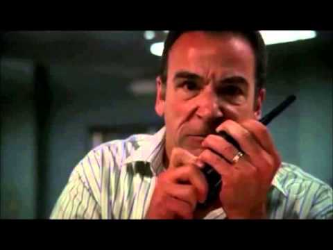

Jason Gideon is the Senior Supervisory Special Agent of the BAU. During the first 2 seasons, he suffers from PTSD from an accident to led to the death of 6 of agents and a hostages and frequently becomes emotionally challenged during the later cases. He learned most of his profiling skills from Max Ryan and has an uncanny ability to notice the right things just in time. During an infamous trip to a convenience store, he comes across a serial killer and outwits him by telling him he knows the secret behind his stutter. From there he is able to grab the gun from the other man and gain control over the situation. He is one of my favorite characters because of how he holds the group together!
